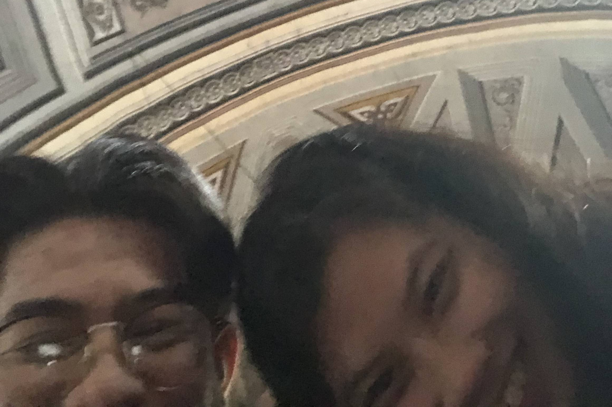
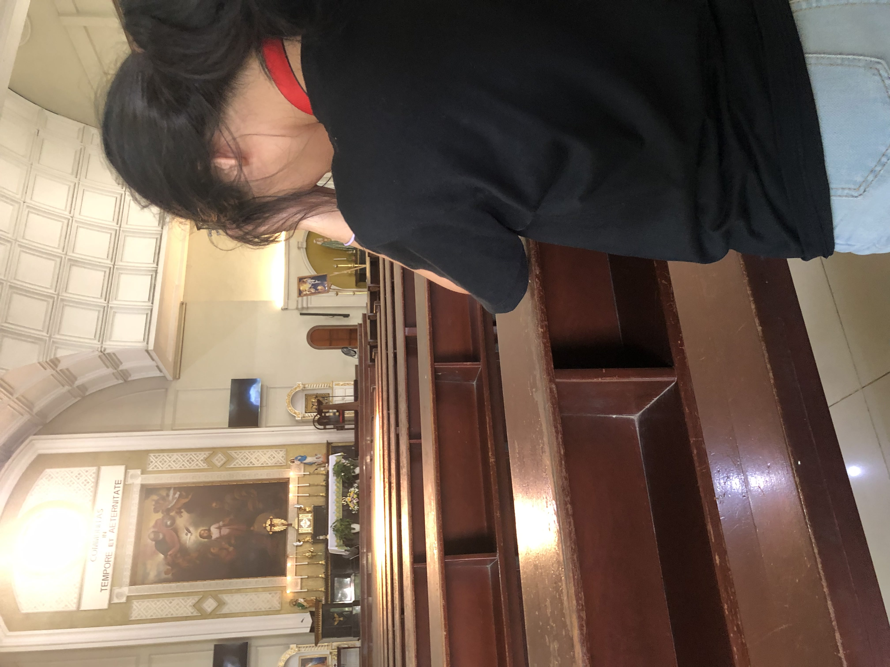
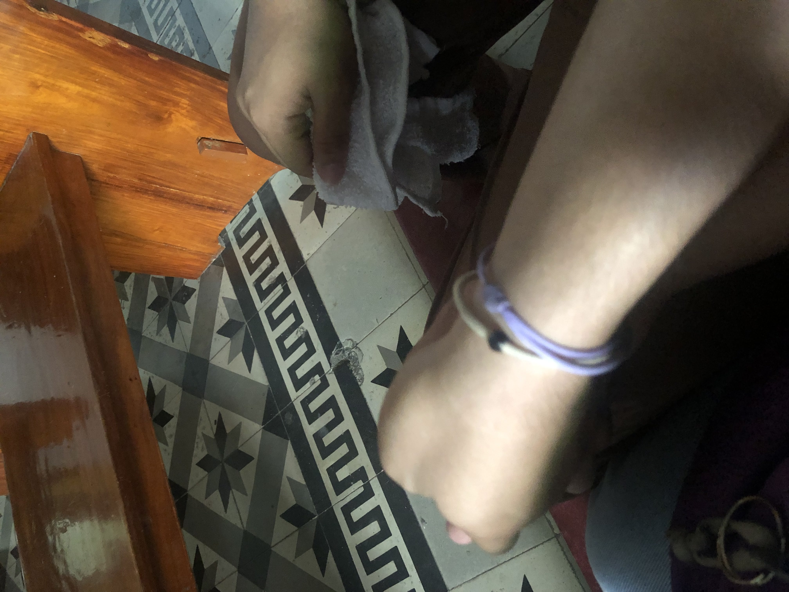

Even when we’re both tired from work, we still choose to see each other and make time for one another. Even when it gets late, we still choose to go home together, rest beside each other, and talk about everything that happened at work, along with all our random little stories and silly conversations. I love how we don’t need anything extravagant to make our time together special. Sometimes, simply being with you after a long and exhausting day is already enough. You’ve become the person I look forward to seeing at the end of the day—the one I can laugh with, talk to about anything, and simply be myself around. I love that even on our most tiring days, we still make an effort to choose each other.

This is just a random picture from the time we went to church, but it means so much to me because I remember looking at you and thinking about how incredibly lucky I am to have you in my life, and that’s why I took this picture. While we were inside the church, I quietly thanked God for giving me someone like you, and I found myself praying that you would never get tired of loving me, that you would never leave me, and that no matter how difficult life gets, we would always choose each other. I know we’re not perfect and that there will be days when we misunderstand each other or feel tired, but I hope we never forget how much we mean to one another. I want to experience everything with you the happy moments, the struggles, the random adventures, the quiet days, and even the ordinary moments that somehow become special just because we’re together. I don’t need a perfect relationship. I just want a lasting one with you, where we continue to love, understand, support, and choose each other every day. You are the person I want to come home to, the person I want to grow with, make memories with, and eventually grow old with. And if there’s one thing I will always pray for, it’s that God continues to guide our relationship and keeps us together, because deep in my heart, ikaw lang talaga ang gusto kong makasama habang buhay.

I’ve been so exhausted that day, even though I don’t always show it or talk about how tired I really am. But then you suddenly held my hand, and somehow, all the heaviness I was carrying felt a little lighter. It’s amazing how something as simple as holding your hand can make me feel so safe and at peace. It feels like I’ve finally come home after a long, tiring day a place where I can breathe, rest, and forget about everything for a while. Your hand feels like my comfort, your presence feels like my safe place, and being beside you gives me a kind of peace that I can’t explain. I don’t need you to fix everything or make my problems disappear, sometimes, I just need you beside me, holding my hand and reminding me that I don’t have to carry everything alone. In those quiet moments with you, I realize that home isn’t always a place it can be a person, and for me, that person is you. I hope you know how much those little things mean to me, because even when I’m at my most tired, being with you makes my heart feel rested.